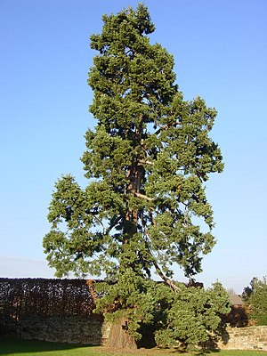

 Де́рево (лат. árbor) — жизненная форма деревянистых растений с единственной, отчётливо выраженной, многолетней, в разной степени одревесневшей, сохраняющейся в течение всей жизни, разветвлённой (кроме пальм) главной осью — стволом[1][2][3]. Общее число деревьев на планете Земля в 2015 году было оценено в 3 триллиона; оценка для России — 640 млрд деревьев (первое место в мире), для Канады и Бразилии — по 300 млрд. Ежегодно число деревьев на планете уменьшается примерно на 15 млрд, это происходит как в результате вырубки лесов, так и изменения климата[4]. Классификация Деревья по виду листьев делятся на хвойные и лиственные. Хвойные отличаются обычно жёсткими вечнозелёными (редко летнезелёными) игловидными или чешуйчатыми листьями, называемыми хвоей, или иглами, образуют шишки или можжевеловые ягоды. К этой группе относятся, например, сосны, ели, пихты, лиственницы, кипарисы, секвойи. Широколиственные деревья имеют широкие и плоские листья — у которых толщина значительно меньше длины и ширины, обычно опадающие раз в год. Широколиственные (или просто лиственные) деревья обычно цветут и плодоносят. К этой группе относятся клёны, буки, ясени, эвкалипты и другие. Кроме классификации по виду листьев, деревья делятся по сроку жизни листьев — на листопадные и вечнозелёные. Листопадные деревья имеют чёткую смену лиственного покрова: все листья на дереве теряют зелёную окраску и опадают, некоторое время (зимой) дерево стоит без листьев, потом (весной) из почек вырастают новые листья. Вечнозелёные деревья не имеют чёткой смены лиственного покрова: листва находится на дереве в любой момент года, и смена листьев происходит постепенно, в течение всей жизни дерева. Кроме биологической классификации деревья делятся и по другим признакам: например, плодовые деревья (плоды которых используются человеком в пищу), ценные (древесина которых используется для промышленных целей), корабельные (используемые в кораблестроении), тропические (ареал которых проходит недалеко от экватора), северные (ареал которых проходит далеко от экватора) и так далее.
>Классификация Деревья по виду листьев делятся на хвойные и лиственные. Хвойные отличаются обычно жёсткими вечнозелёными (редко летнезелёными) игловидными или чешуйчатыми листьями, называемыми хвоей, или иглами, образуют шишки или можжевеловые ягоды. К этой группе относятся, например, сосны, ели, пихты, лиственницы, кипарисы, секвойи. Широколиственные деревья имеют широкие и плоские листья — у которых толщина значительно меньше длины и ширины, обычно опадающие раз в год. Широколиственные (или просто лиственные) деревья обычно цветут и плодоносят. К этой группе относятся клёны, буки, ясени, эвкалипты и другие. Кроме классификации по виду листьев, деревья делятся по сроку жизни листьев — на листопадные и вечнозелёные. Листопадные деревья имеют чёткую смену лиственного покрова: все листья на дереве теряют зелёную окраску и опадают, некоторое время (зимой) дерево стоит без листьев, потом (весной) из почек вырастают новые листья. Вечнозелёные де ревья не имеют чёткой смены лиственного покрова: листва находится на дереве в любой момент года, и смена листьев происходит постепенно, в течение всей жизни дерева. Кроме биологической классификации деревья делятся и по другим признакам: например, плодовые деревья (плоды которых используются человеком в пищу), ценные (древесина которых используется для промышленных целей), корабельные (используемые в кораблестроении), тропические (ареал которых проходит недалеко от экватора), северные (ареал которых проходит далеко от экватора) и так далее. Хвойные деревья Основная статья: Хвойные Сосновые Основная статья: Сосновые Дополнительные сведения: сосна, ель, кедр, лиственница, пихта, и тсуга.